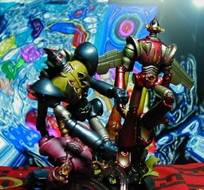
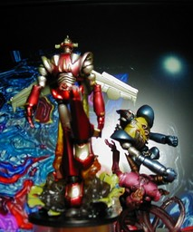

S.I.C. 匠魂 Vol. 1&2 キョーダイン

ほぼ正面 ほぼ横
スカイゼルを前 S.I.C. 匠魂 vol.1 のスカイゼル、同 vol.2 のグランゼルです。スカイゼルは少し前に傾けて写しています。背景は http://www.deanmars.com/ のものを勝手に使っています。 更新：06/02/03 初公開：2006年02月03日 02:14:35 Links: S.I.C.: http://www.tamashii.jp/sic/ 背景: http://www.deanmars.com/Art/Alien%20Worlds%203%20400x300.jpg